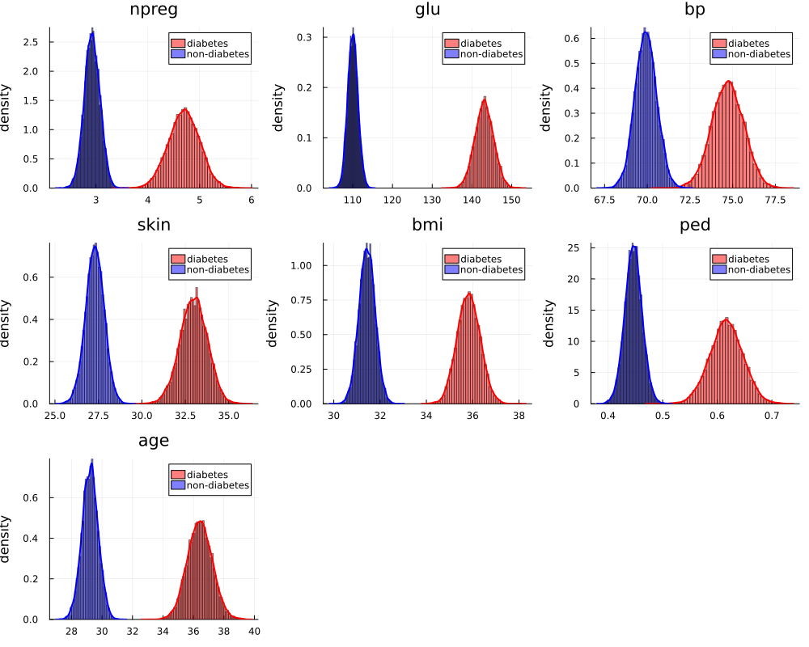
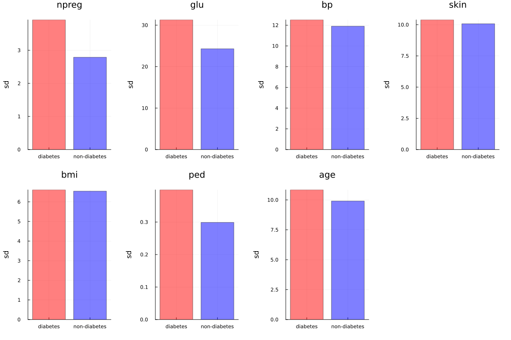
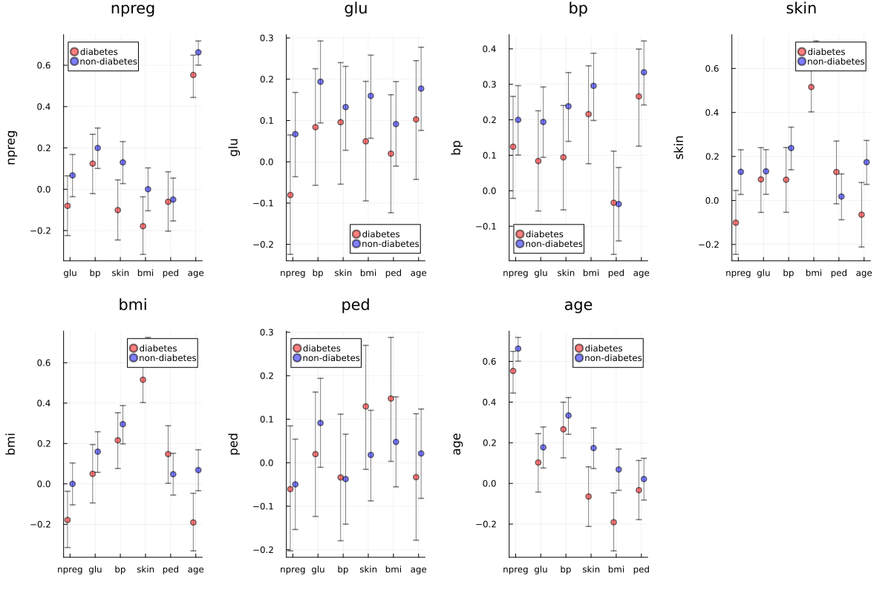

7.6
Answers of exercises on Hoff, A first course in Bayesian statistical methods, Chapter 7
Table of Contents
a)
Answer
preprocess & Gibbs sampler
Y_src = readdlm("../../Exercises/azdiabetes.dat", header=true) Y = Y_src[1] header = Y_src[2] |> vec df = DataFrame(Y, header) col_int = [:npreg, :glu, :bp, :skin, :age] col_float = [:bmi, :ped] col_str = :diabetes df[!,col_int] = Int.(df[!,col_int]) df[!,col_float] = Float32.(df[!,col_float]) df[!,col_str] = String.(df[!,col_str]) df_d = filter(:diabetes => ==("Yes"), df) df_n = filter(:diabetes => ==("No"), df) function getPosterior(df, S) # select columns except for diabetes Y = select(df, Not(:diabetes)) |> Matrix n, p = size(Y) ȳ = mean(Y, dims=1) |> vec Σ̂ = cov(Y) # set prior μ₀ = ȳ Λ₀ = Σ̂ S₀ = Σ̂ ν₀ = p + 2 function multivariateGibbs(S, Σ_init, μ₀, Λ₀, S₀, ν₀, Y) n, p = size(Y) THETA = Matrix{Float64}(undef, S, p) SIGMA = Matrix{Float64}(undef, S, p^2) Σ = Σ_init ȳ = mean(Y, dims=1) |> vec for s in 1:S # update θ Λn = inv( inv(Λ₀) + n * inv(Σ) ) μn = Λn * ( inv(Λ₀) * μ₀ + n * inv(Σ) * ȳ ) |> vec dist = MvNormal(μn, Symmetric(Λn)) θ = rand(dist) # update Σ Sn = S₀ + (Y' .- θ) * (Y' .- θ)' # Σ = rand(InverseWishart(n + ν₀, Sn)) Σ = rand(InverseWishart(n + ν₀, round.(Sn, digits=5))) # save results THETA[s, :] = vec(θ) SIGMA[s, :] = vec(Σ) end return THETA, SIGMA end THETA, SIGMA = multivariateGibbs(S, Σ̂, μ₀, Λ₀, S₀, ν₀, Y) return THETA, SIGMA end S = 10000 THETA_d, SIGMA_d = getPosterior(df_d, S) THETA_n, SIGMA_n = getPosterior(df_n, S)
marginal posterior distribution

p = size(THETA_d, 2) for i in 1:p theta_d = THETA_d[:, i] theta_n = THETA_n[:, i] println("Pr(θd,$i > θn,$i) = ", mean(theta_d .> theta_n)) end
Pr(θd,1 > θn,1) = 1.0 Pr(θd,2 > θn,2) = 1.0 Pr(θd,3 > θn,3) = 1.0 Pr(θd,4 > θn,4) = 1.0 Pr(θd,5 > θn,5) = 1.0 Pr(θd,6 > θn,6) = 1.0 Pr(θd,7 > θn,7) = 1.0
- 全ての変数で、糖尿病患者と非糖尿病患者間での平均値の差があると言える。 (For all variables, it can be said that there is a difference in mean values between diabetic and non-diabetic patients.)
b)
Answer
standard deviation

correlation

discussion
日本語
- 標準偏差は、糖尿病患者群の方が、やや大きい
- 相関係数は diabetes pedigree 以外の変数に関して、非患者群の方が大きい。
English
- The standard deviation is slightly larger in the diabetic patient group.
- For variables other than
diabetes pedigree, the correlation coefficient is larger in the non-diabetic group.